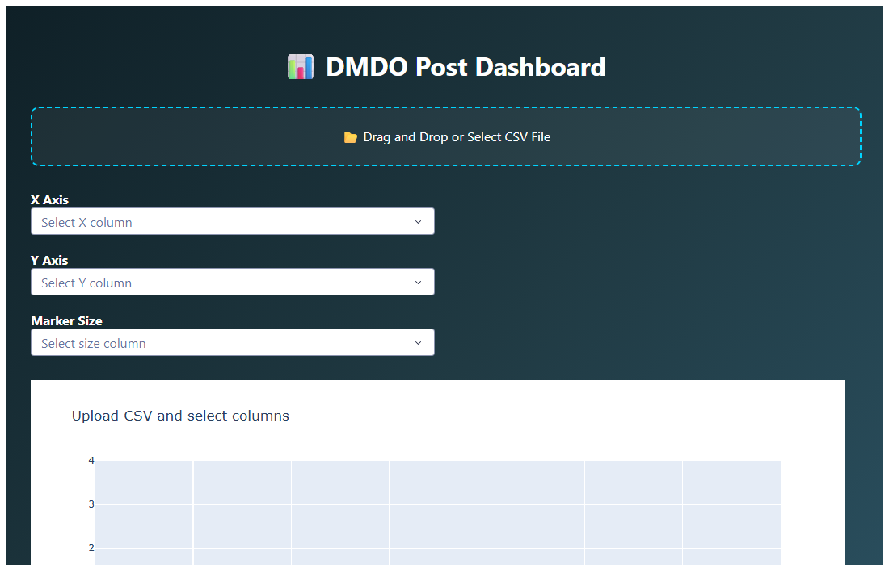
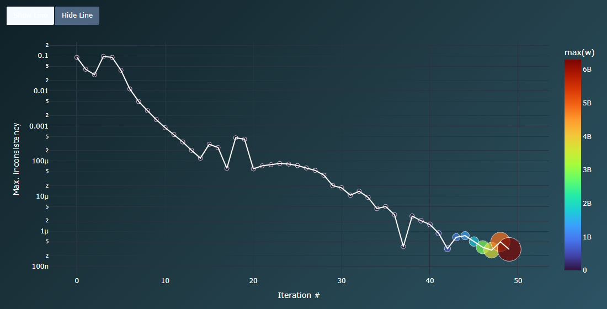

The post-processing dashboard#
DMDO ships a small web dashboard for exploring the files a run writes. It plots any column of a run’s history against any other, so the progress of the coordination (consistency, objective, penalty weights, variable copies) or of a single subproblem’s inner solves can be inspected interactively, without writing plotting code.
Starting the dashboard#
from DMDO import dmdo_dash
dmdo_dash() # serves the dashboard on http://127.0.0.1:8050
or, from a terminal:
$ python -m DMDO.dashboard
Then open http://127.0.0.1:8050 in a browser. The dashboard runs on Dash’s development server, on your own machine only; stop it with Ctrl+C.


Figure 18 The dashboard before a file is loaded.#
Plotting a run#
Load a file. Drop a file on the dashed area, or click it to pick one. Any comma-separated output of a run can be loaded: the coordination history
Coordination_history.out, or the evaluation historySP_<j>_<t>.outof one subproblem solve (Outputs). The.outfiles are plain CSV; select All files in the file picker if it only lists.csvfiles.Choose the axes. The X Axis and Y Axis selectors list every column of the file. They start on the first two columns (
TimeandIteration #); pick, for example,Iteration #andMax. inconsistency.Optionally choose a marker-size column. The marker size, and the color, then grow with that column, e.g.
max(w)to see where the penalty weights grow. Without one, the markers are colored by the Y values.


Figure 19 The basic problem of The basic problem from YAML: maximum inconsistency (Y) at each outer iteration (X), with markers sized and
colored by the largest penalty weight max(w). The copies agree to \(3\times10^{-7}\) while the
penalty weights reach about \(6\times10^{9}\).#
The plot is interactive: hover over a point to read its values, drag to zoom, double-click to reset the view, and use the toolbar to pan or save the figure as a PNG. The Show Line and Hide Line buttons toggle the line that joins the points in X order.
Note
The Y axis is logarithmic, which suits inconsistencies, penalty weights and constraint violations spanning many orders of magnitude. Zero and negative values cannot be shown on it, so columns that change sign (for example an objective that becomes negative) are only partly displayed.
Useful views#
File |
X axis |
Y axis |
Marker size |
|---|---|---|---|
|
|
|
|
|
|
|
|
|
|
|
|
|
|
|
|
For plots in scripts or reports, load the same files with pandas (The basic problem from YAML shows how).